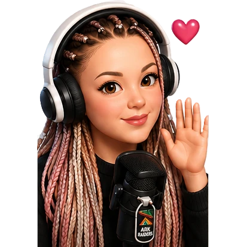
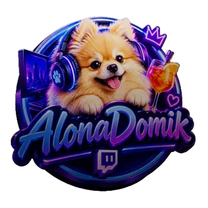
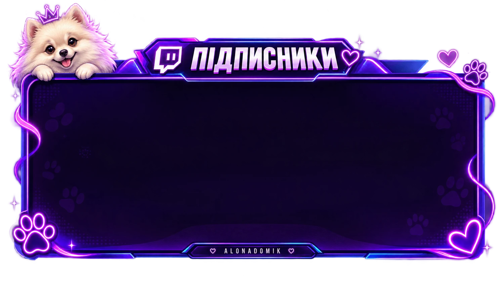

ДомікАлони
Доброго вечора, ми з України! Етери зі столиці й наші спільні кроки новачка.PS5, Twitch і любов до сінглів та онлайну.
Зайти на стрім
Де нас знайти
Що тут відбувається
Мене звати Альона. Проводжу етери зі столиці й вчуся користуватися всім цим разом із вами.
Ігри на PS5. В мене лапки, тому граю з геймпадом. Люблю і сінгл-проходження, і онлайн-ігри.
Вдома. Чотири котики й собаня.
Чат і сайт. Бали каналу, VIP на пів року, черга фільмів, дошки стріків і донатів.
Скоро на сайті

- Черга фільміву розробці
- Лідерборд донатівскоро
- Лідерборд стріківу розробці
Також будуть: список VIP, команди бота з описами, цитатник і клипи.
DomikBotUA
Живе в чаті Twitch і в Telegram: відповідає глядачам, оголошує початок стріму та зміну категорії, видає VIP.